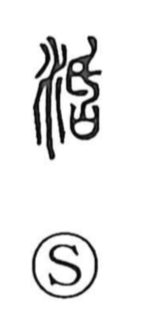

活

Uncategorized
Kun: ikiru, ikasu | On: katsu
to live ・ vitality ・ lively ・ resuscitation
Explanation
A phono-semantic character: the water radical gives the sense, while the right-hand element—now written as 舌 and historically linked to an older graph depicting a covenant vessel being pierced with a handled blade—provides the sound katsu. That act of pricking annulled the prayers placed inside and yielded the rasping notion of scraping or cutting away, echoed in the onomatopoeic reduplication katsukatsu (Chinese huohuo), which also came to evoke the lively rush of flowing water. With water as its semantic base and this vigorous sound image as its phonetic cue, 活 came to express the energetic power of life itself—hence “to live” and the sense of lively vitality.